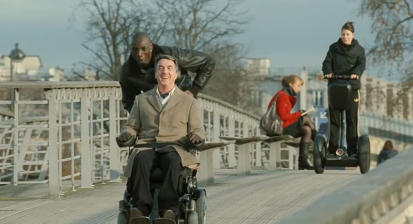
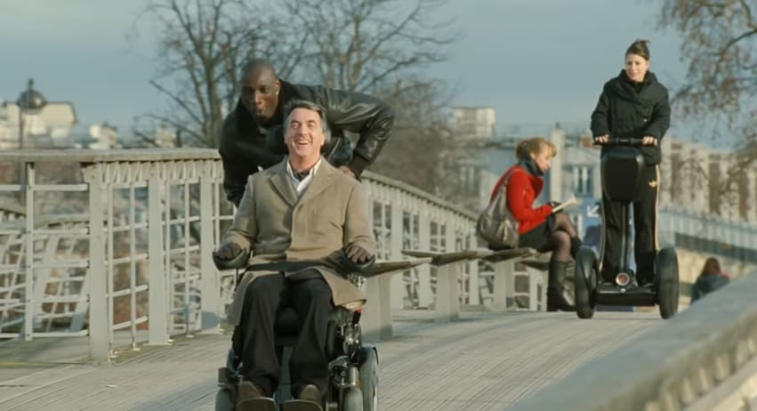

Борат
Телеведущий из Казахстана Борат отправляется в США, чтобы сделать репортаж об этой «величайшей в мире стране». Однако по прибытии оказалось, что главная цель его визита — поиски Памелы Андерсон с целью жениться на ней, а вовсе не съемки документального фильма..


Информация о фильме
| Год | 2006 |
|---|---|
| Страна | США, Великобритания |
| Жанр | Комедия, Сатира, Псевдодокументальный |
| Режиссер | Ларри Чарльз |


 
